Netarhat
Netarhat, also known as the 'Queen of Chotanagpur,' is a hill station with historical places like Magnolia Point, Netarhat Dam, and Koel View Point.

 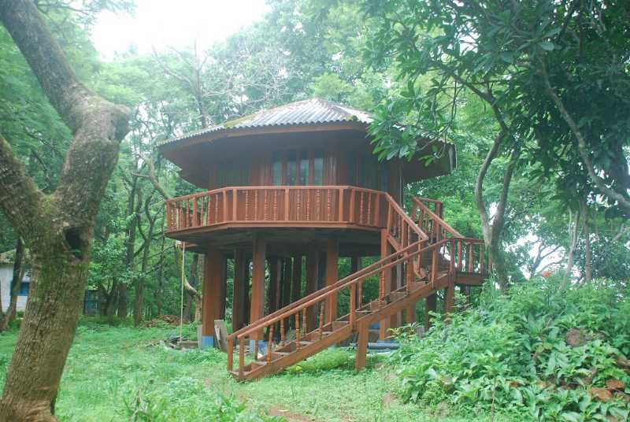
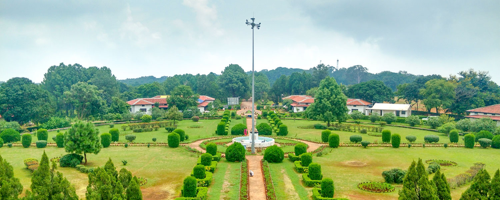
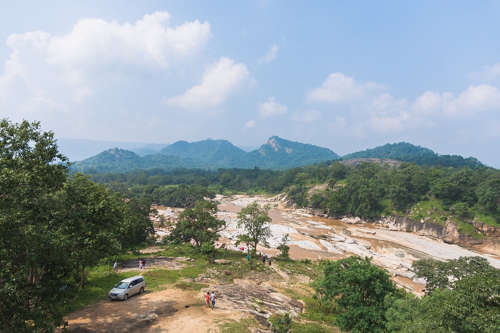
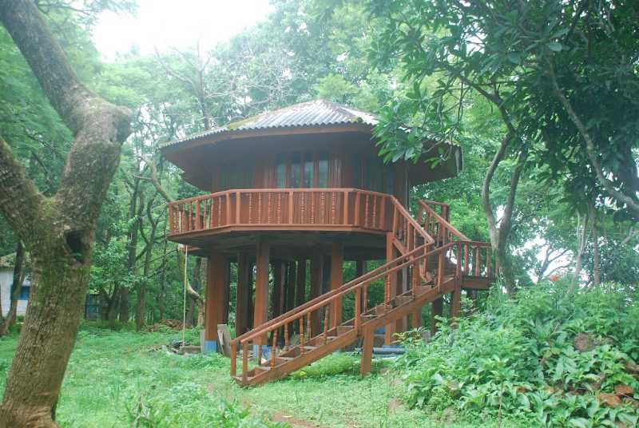
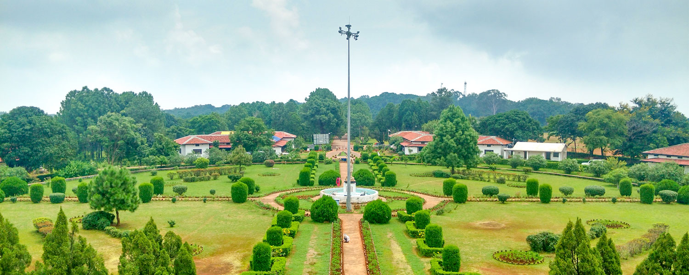
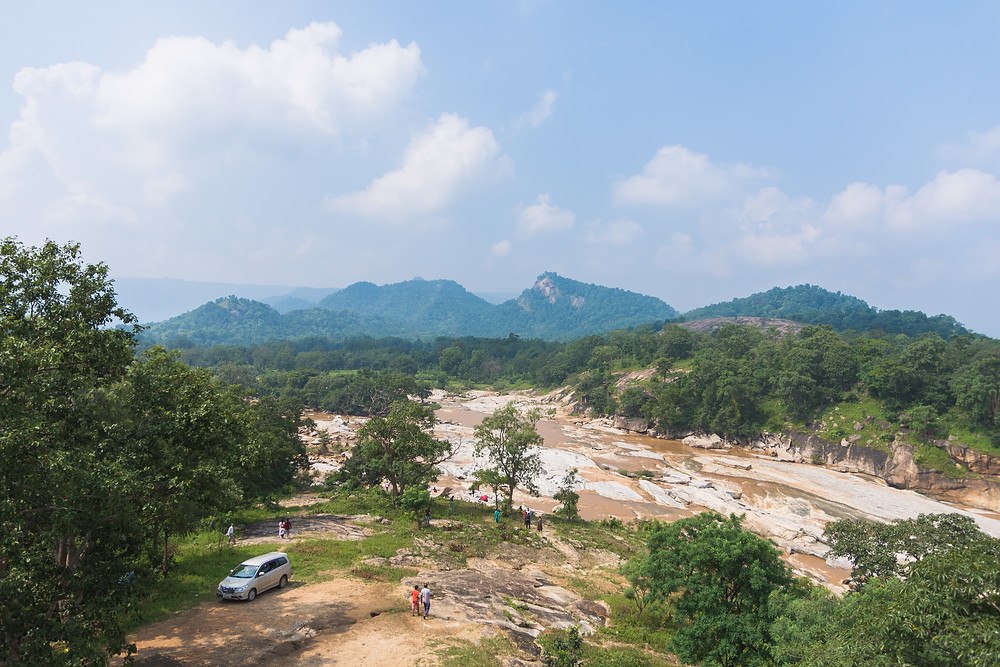
Ranchi, the capital of Jharkhand, features historical sites like Jagannath Temple, Rock Garden, and Ranchi Lake. The Hundru Falls and Jonha Falls are natural attractions.
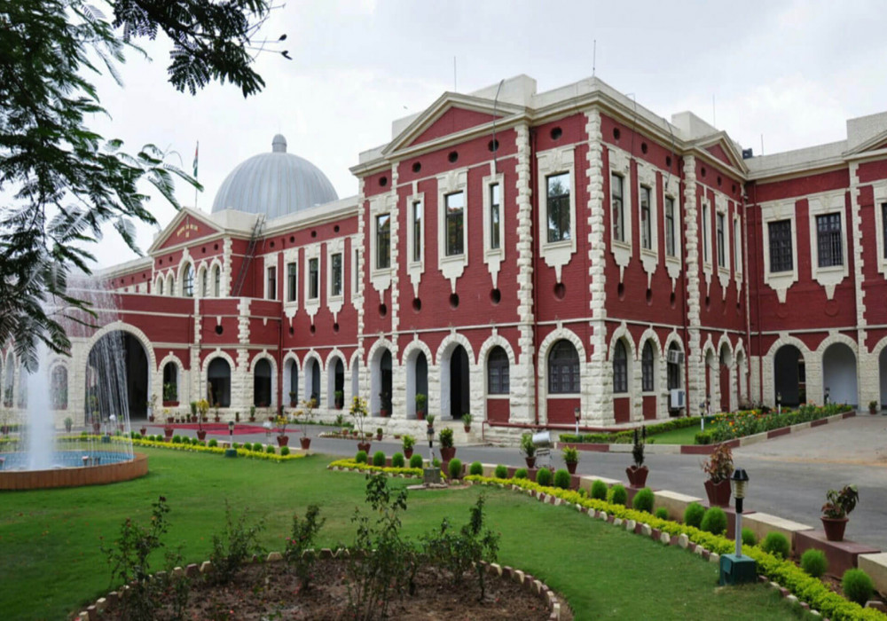 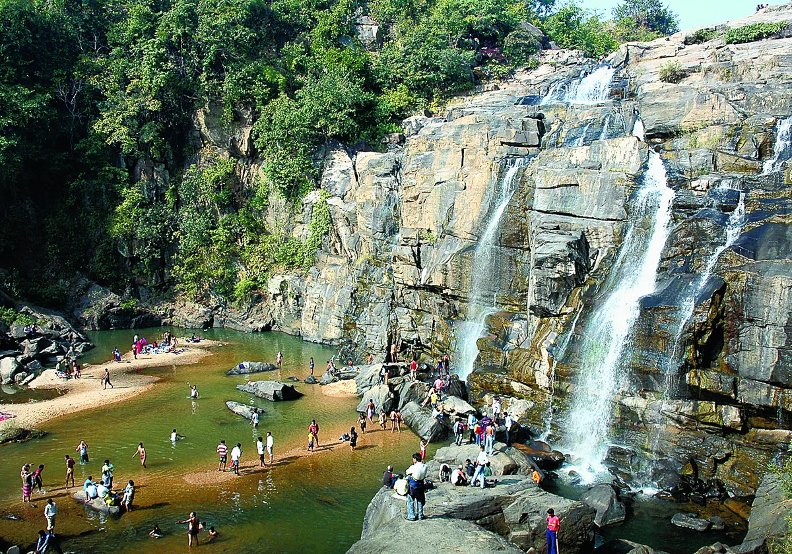 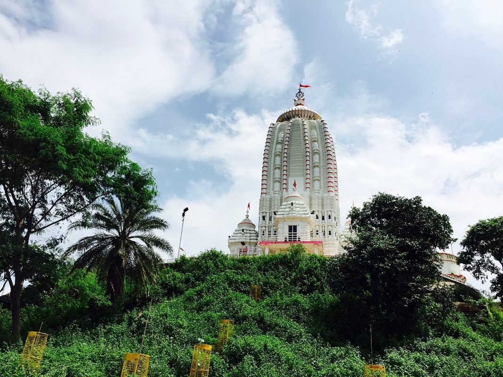Jamshedpur is known for its historical Jubilee Park, Tata Steel Plant, and Dimna Lake. The Sir Dorabji Tata Park and Dalma Wildlife Sanctuary are popular attractions.
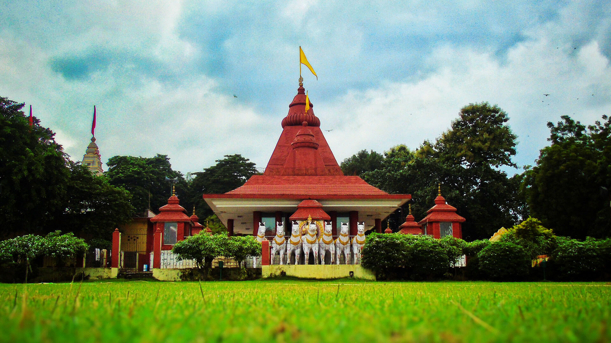 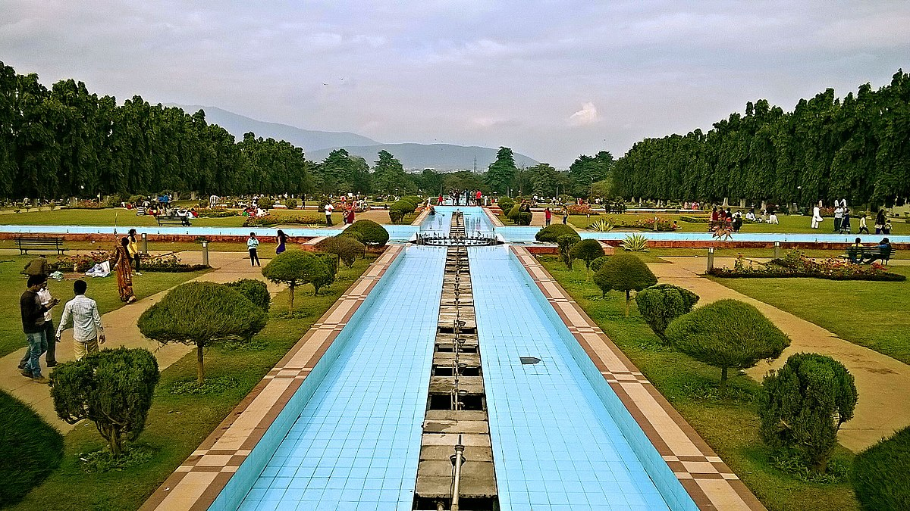Netarhat, also known as the 'Queen of Chotanagpur,' is a hill station with historical places like Magnolia Point, Netarhat Dam, and Koel View Point.
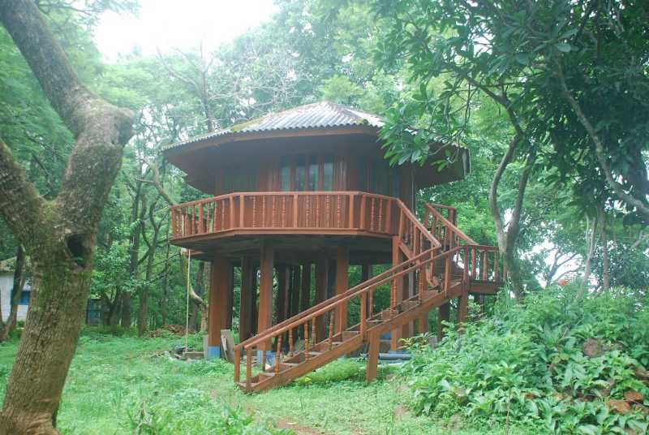
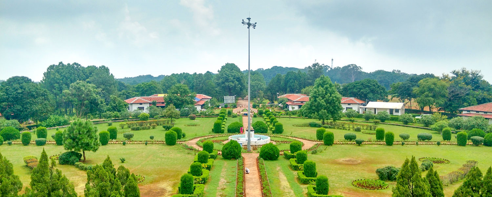
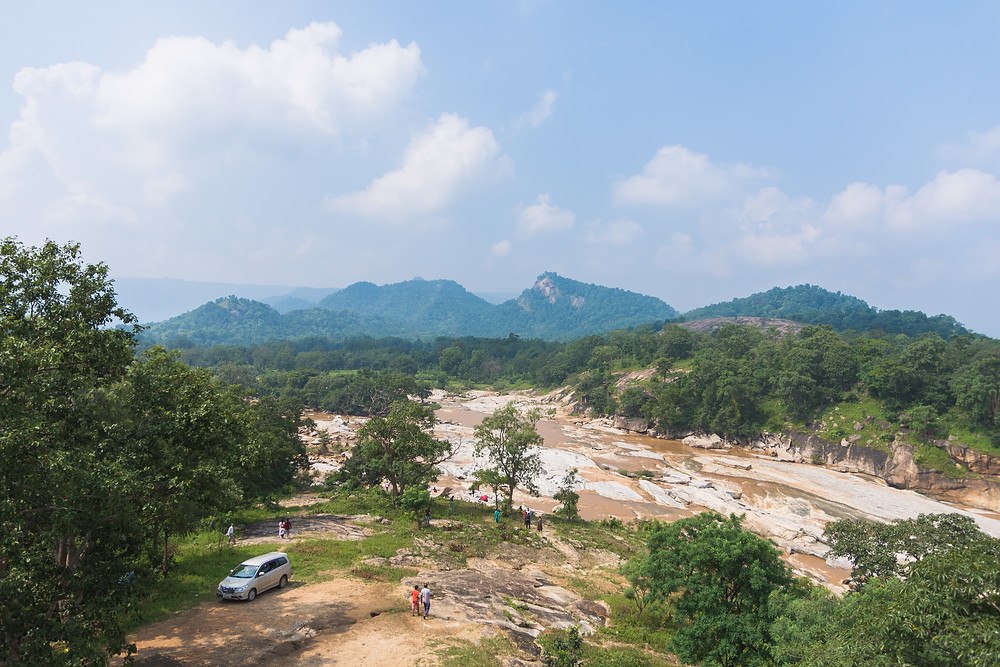